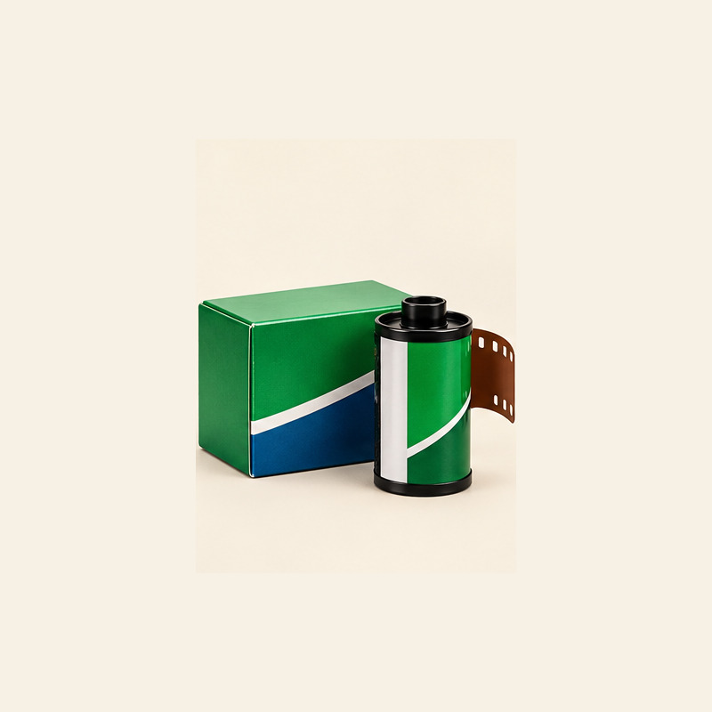
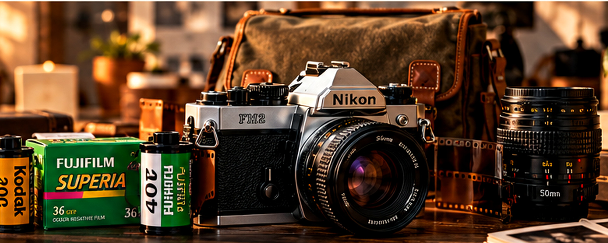
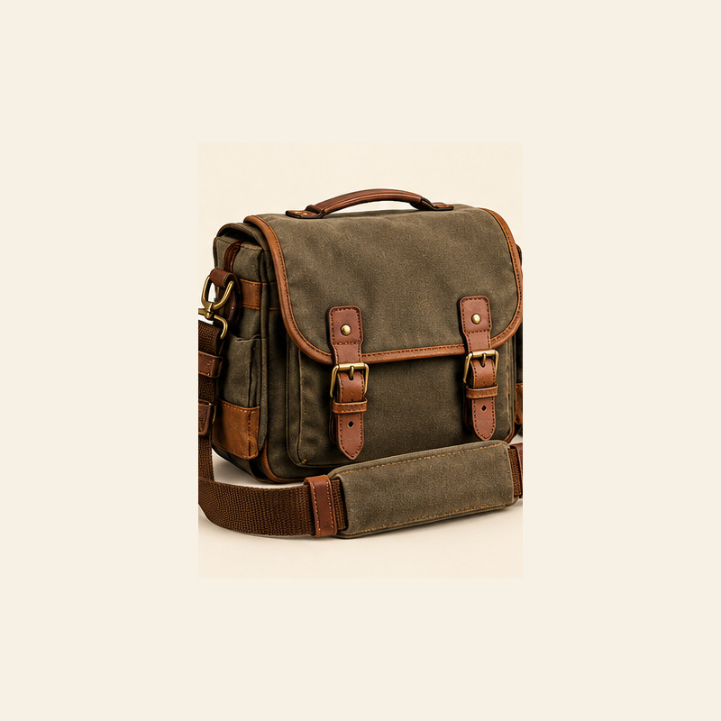
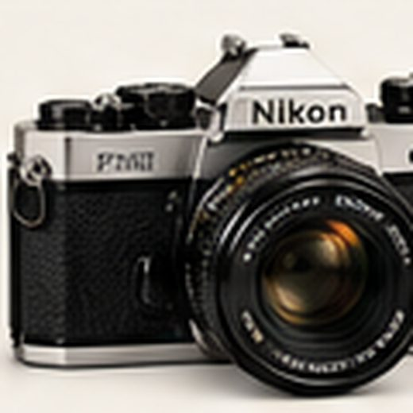

FIELD NOTE 001 · FILM
Choosing your first roll
Start with the light you have, the colors you love, and a film speed that suits your day.
Ask us about film ↗
ANALOG PHOTOGRAPHY · EST. FOR THE CURIOUS
Film, cameras, and carefully chosen accessories for the art of slowing down and seeing more.
Curated selectionThoughtful gear for film lovers
Carefully packedShipping on orders over $75
Human supportHelp choosing compatible gear
Made for the processFrom first roll to darkroom
START WITH YOUR NEXT FRAME
A considered edit of the tools, materials, and small rituals that make shooting film feel like yours.
THE GOOD STUFF
A focused collection for the curious, the collectors, and the everyday documentarians.
No pieces found. Try another search or category.
Prices shown are illustrative demo prices, not live inventory or verified offers. Vintage camera condition and lens compatibility must be confirmed before purchase.

THE EVERYDAY CARRYA NOTE ON SEEING
We believe in the pause before the shutter, the happy accident in a frame, and the small ritual of loading a fresh roll. GRAIN & LIGHT is a love letter to making photographs with intention.
Read our field notes ↗NOTES FROM THE FIELD
A few starting points for getting more out of every roll and every camera.

FIELD NOTE 001 · FILM
Start with the light you have, the colors you love, and a film speed that suits your day.
Ask us about film ↗
FIELD NOTE 002 · GEAR
Shutter speeds, light seals, meter accuracy, and lens mount are worth checking before buying.
Talk gear with us ↗FIELD NOTE 003 · DARKROOM
Learn the basic tools, safe handling, and compatibility questions before your first development.
Explore darkroom ↗GOOD TO KNOW
This storefront is a demo. Before a real launch, each used camera must have a documented condition grade and a verified functional check.
No. Lens mounts and formats vary. Confirm the exact mount and camera model before ordering a lens.
Film processing is not currently connected to this demo store. The darkroom section is a product category concept.
Not yet. The cart is interactive, but checkout and payment processing are not connected.
HERE WHEN YOU NEED US
Need help choosing film, checking lens compatibility, or deciding what belongs in your kit? Send us a note and we’ll help you find the right next step.
Placeholder contact details — replace with verified business information before publishing.
Contact the team ↗